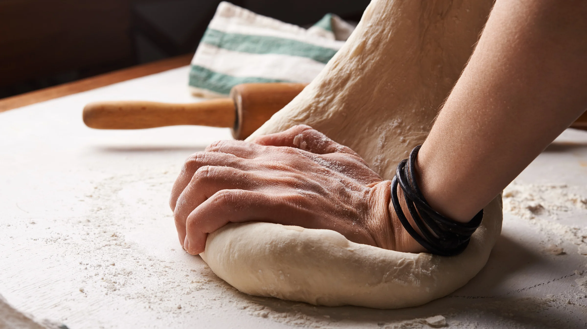

When making bread, you will definitely come across a plethora of problems that could make or break whatever your
baking. Here are a couple tips and tricks to save you from a future bread mess-up!

- If you are kneading by hand, which is the case for most people, then having a bench scraper on hand is a major life-saver because it helps you easily gather all of your dough, even when it’s sticky.
- On the topic of sticky dough, you may be tempted to use flour when handling sticky dough. Though flour definitely helps with dealing with dough, I personally prefer using oil. You only need to use a little amount of it to make the dough stick less and, at the same time, it also keeps the dough less sticky for a longer amount of time.
- For those that are using a stand mixer, make sure to only use either speed 1 or 2. You don’t want your dough to be kneaded too fast because you increase your chances of over kneading your dough, and you would have to redo everything. Moreover, your mixer will most likely overheat, which is not a very good practice as it will wear down your mixer’s engine and making it prone to more issues.
- When rising your dough, you usually want to keep it in a warm place (unless you’re doing a cold rise). One of the best places to keep your dough while it’s rising is the oven, with the door just slightly open, since it happens to be the perfect temperature for the yeast in your dough to develop nicely.
- Though people most commonly use plastic wrap to cover their breads while rising, you can also use a tea towel that is slightly damp as an alternative. Tea towels are reusable and much more convenient to use than plastic wrap.
- If you want to make your dough in advance, you can always do a cold rise. This just means that you let your dough rise in the fridge, or any cold place in general. Yeast develops faster when it’s in a warm area, which also means that this process gets slowed down when it is in a cold environment. If you want to make your dough a night or so in advance, then just make your dough like normal then let it rise in the fridge. Once in the fridge, it will take your dough about 12-24 hours to double in size and fully develop.
- Once your dough is done rising, you will usually have to divide and shape it into individual pieces already. When dividing your dough, it is always best practice to use a weighing scale to make sure that each of your pieces are equal. Though it is totally fine to do this by eye, dividing your dough based on weight will ensure that everything is equal and really eases up the process of dividing the dough.
- I would recommend that you go through this part the quickest, because if you take a long time to shape your dough, then the pieces that you will make will not end up rising at the same time. This results in uneven sizes among your bread, and though this doesn’t affect the taste, it definitely won’t look pretty as some bread will end up over rising, while others end up under rising.
- There are times when shaping your dough can be a bit complicated, depending on what bread your making. When I’m a bit doubtful of how I’m going to shape a specific bread, I always check out videos online and watch how other people do it, so that I have a clearer idea of how I’m going to deal with the dough.
- Most bread recipes involve you shaping your dough in small balls. To easily shape your dough into a ball, check out the video below:
- Most of the time, you will add some sort of glaze to the top of your bread before baking in order to give it a glossy and browned look. Though egg or milk is most commonly used, there are many other glazes that you can try out with your dough:
- Breads usually doesn’t need much time to bake, and only requires something between 10-30 minutes, depending on the size of your dough. This is important to take note of because you want to make sure that you’re nearby when you have bread baking, as it can easily overbake.
- Once your bread is done baking, always let it cool on a cooling rack. This prevents the bottom of your bread from becoming moist, since the holes on a cooling rack help cool all parts of the bread and keep it fluffy once done cooling.